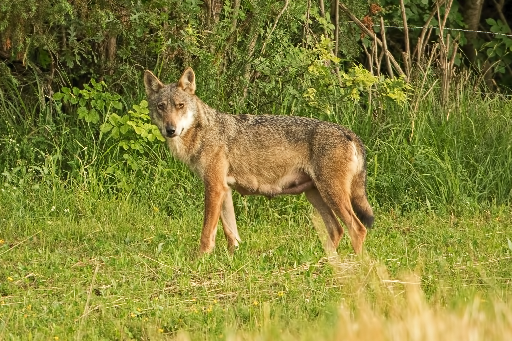
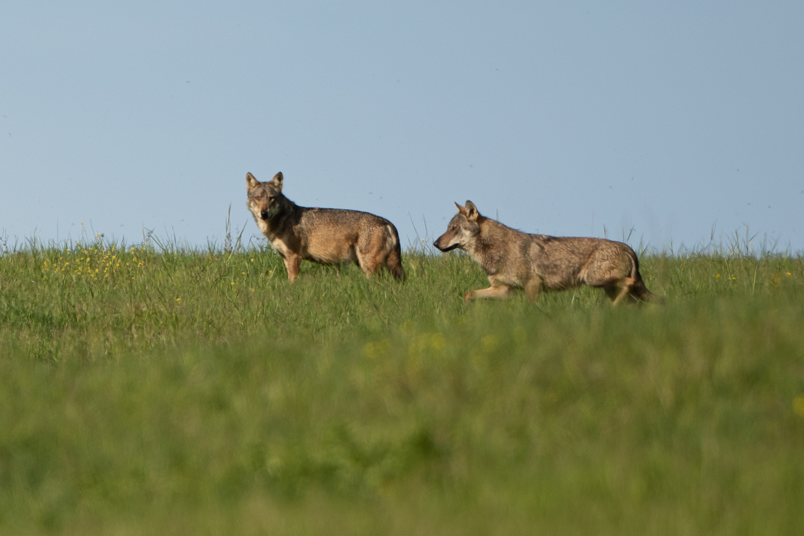
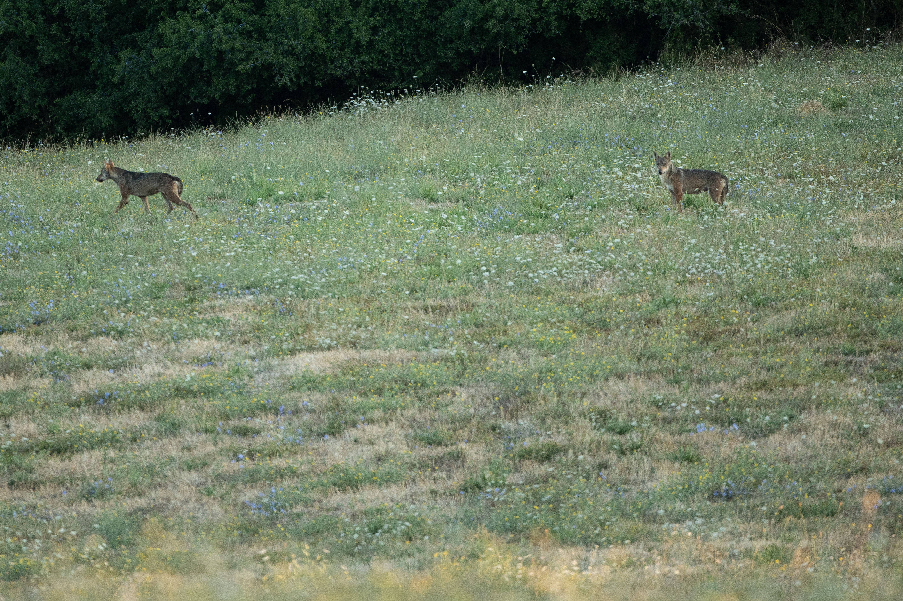
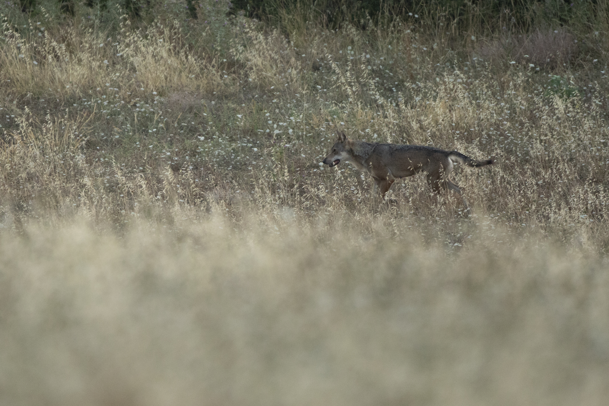

Il progetto
White Pack è un progetto di documentazione naturalistica che segue nel tempo la presenza e il comportamento di un branco di lupi all’interno del proprio territorio.
Metodo
L’approccio combina presenza sul campo continua tramite strumenti indiretti di monitoraggio e sessioni di osservazione diretta, con l’obiettivo di costruire un archivio coerente e continuativo dal 2022.
L'area di studio è stata suddivisa in stazioni situate in punti di passaggio strategici individuati nel tempo. Questo permette di osservare interazioni tra i membri del branco e di come cambino l'uso di alcune parti dell'areale durante l'anno; oltre alle dinamiche che intercorrono tra predatore e prede presenti.
Tutto il materiale viene catalogato in un dateset in costante aggiornamento, in cui vengono annotate date, orari di cattura, nonché caratteristiche dei soggetti se riconosciuti con certezza ed il comporamento osservato.
Obiettivo
Costruire una narrazione visiva coerente che racconti l'evoluzione del branco nel tempo, riconoscendo i soggetti riproduttori adulti, membri subadulti e cuccioli dal periodo della nascita in poi.
Di seguito, i singoli capitoli del progetto: individui, eventi osservati e approfondimenti scientifici.
Sezioni del progetto
La femmina riproduttrice
Bianca, osservata fin dalle prime fasi del progetto (2022), rappresenta uno degli individui più facilmente riconoscibili di tutto il branco. Le immagini raccolte negli anni hanno permesso di documentarne la presenza costante come caposaldo della famiglia anche durante i ritmi invernali; il ruolo nella crescita dei cuccioli e le interazioni con gli altri membri.





Soggetti riconosciuti
Nel corso degli anni alcuni individui sono stati osservati con una certa continuità, permettendo di riconoscerne caratteristiche fisiche, ruoli sociali e cambiamenti nel tempo.